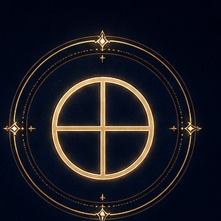

Энергия
Материя, тело, природа, устойчивость, практическое воплощение.
Характер энергии
Реалистичность, потребность в безопасности, связи с телом и окружающим миром.
Влияние на жизнь
В геоцентрической астрологии Землю обычно не трактуют как отдельную планету карты; эзотерически она символизирует способность заземлять идеи, заботиться о теле и превращать замысел в результат.
В ресурсе
Надёжность, терпение, плодотворность, экологичность.
В тени
Инертность, материализм, страх перемен, чрезмерный контроль.
Формула
«Я воплощаю».
Описание носит символический характер и не является научным объяснением личности или судьбы. Проявление планеты в реальной карте зависит от знака, дома и аспектов.